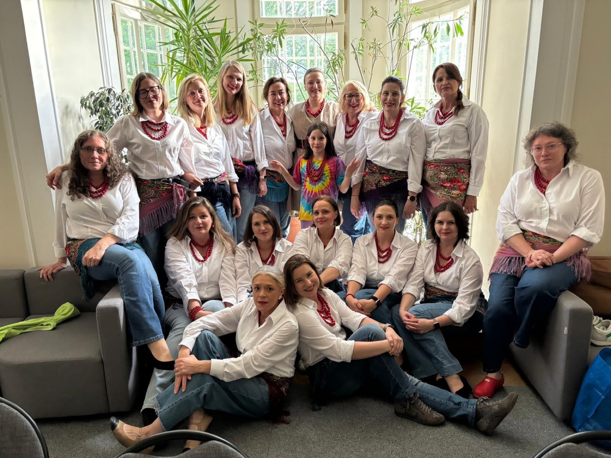
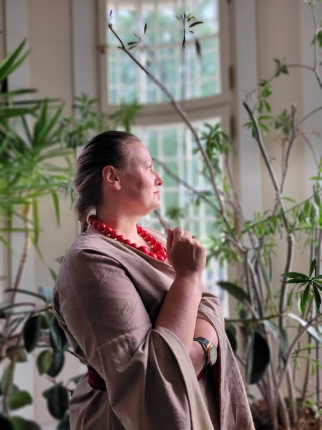
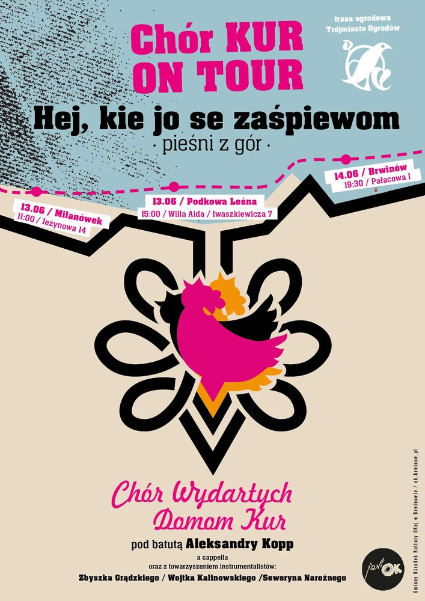
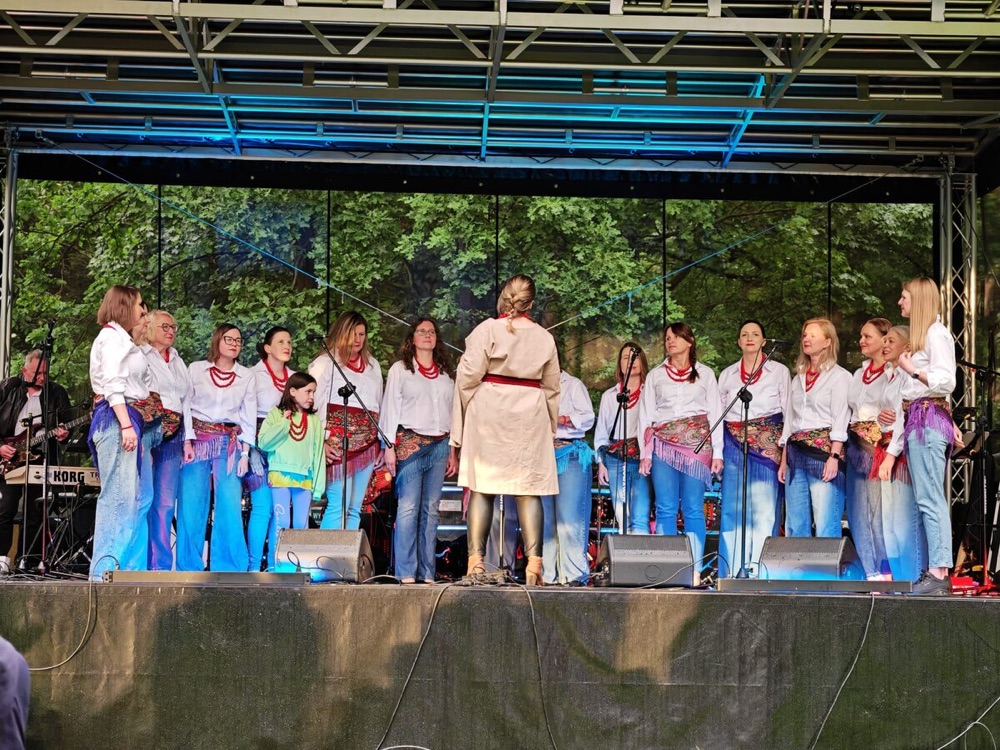

Kim jesteśmy
To właśnie my
Kobiety, które kochają śpiewać! Nasze grzędy pomieszczą więcej Kurek! Może dołączysz?

Za pulpitem
Chórmistrzyni · Dyrygentka · Trenerka wokalna
Aleksandra Kopp to jedna z najbardziej wszechstronnych postaci polskiej sceny chóralnej. Wieloletnia dyrygentka i kierowniczka chóru w Państwowym Zespole Ludowym Pieśni i Tańca „Mazowsze”.
To właśnie ona przygotowała wokalnie Joannę Kulig do roli w filmie Pawła Pawlikowskiego „Zimna wojna” — w tym do kultowego wykonania „Dwóch serduszek”, które obiegło cały świat.
Ambasadorka Stalowej Woli, trenerka wokalna z bogatym dorobkiem. Pierwsza dyrygentka ChWDK — od lutego 2026 roku ponownie stoi za pulpitem chóru.
Posłuchaj nas
Nagrania z Otwartych Ogrodów 2026 — Milanówek i Podkowa Leśna. Pieśni z gór, a cappella i z akompaniamentem.
Wszystkie nagrania 7

Gdzie występujemy
Pod batutą Aleksandry Kopp

Historia
Chór Wydartych Domom Kur powstał w 2013 roku z inicjatywy Anny Sobczak, ówczesnej dyrektorki Ośrodka Kultury „Okej” w Brwinowie. Autorką nazwy jest współzałożycielka Anna Żaczek-Siwczuk. Chór skupia kobiety, które na co dzień nie zajmują się muzyką zawodowo — śpiewają z czystej miłości do sztuki.
Przez ponad 10 lat koncertowałyśmy lokalnie, w kraju i za granicą, zdobywałyśmy nagrody, dotarłyśmy do Wilna i na Warszawską Jesień. W 2024 roku wzięłyśmy udział w akcji „Depresja? Nie!” i spektaklu „Pieśni codzienności — nigunim”.
Próby w każdy poniedziałek · OKej Brwinów.
Kalendarium
Założenie chóru
Założycielką chóru jest Anna Sobczak, ówczesna dyrektorka Ośrodka Kultury „Okej” w Brwinowie. Nazwę „Chór Wydartych Domom Kur” wymyśliła współzałożycielka Anna Żaczek-Siwczuk. Pierwszą dyrygentką zostaje Aleksandra Kopp związana wówczas z Zespołem „Mazowsze”.
Pierwsze nagrody ogólnopolskie
Srebrne Pasmo w Chełmnie. Brązowe Pasmo w Rzeszowie i Goniądzu z nagrodą Dyrektora Parku Biebrzańskiego. Wyróżnienie w Pruszkowie.
Michał Haber
Wieloletni śpiewak i tancerz PZPiT Mazowsze, kierownik chórów w Brwinowie i Warszawie, przejmuje prowadzenie.
Wilno
Pierwszy zagraniczny koncert — repertuar kolędowy w barokowym Kościele Wniebowzięcia NMP w Wilnie.
Artur Małecki
Za pulpitem staje dyrygent chóru Reprezentacyjnego Zespołu Artystycznego Wojska Polskiego.
Warszawska Jesień
Udział w spektaklu „Pieśni codzienności — nigunim”. ChWDK wspiera akcję „Muzyka – wsparcie osób w depresji” organizowaną przez Fundację Chórtownia.
Aleksandra Kopp wraca
Aleksandra Kopp ponownie staje za pulpitem. ChWDK śpiewa dalej z tym samym sercem i coraz większymi ambicjami.
Galeria
Trasa z repertuarem zakopiańskim — wiosna i lato 2026.
Dni Piastowa9 maja 2026
Otwarte OgrodyMilanówek · Podkowa Leśna · Brwinów · czerwiec 2026
Repertuar
For international partners
The Chór Wydartych Domom Kur (Women’s Choir of Mazovia) was founded in 2013 in Brwinów, near Warsaw. Our name translates as „A Choir of AWOL Birds (A.C.A.B.)” — women who are not professional musicians, but who sing out of pure love for music.
Over more than a decade, we have won awards at national and international competitions, performed in Vilnius (2020) and taken part in the prestigious Warsaw Autumn contemporary music festival (2024).
The choir was founded by Anna Sobczak, at the time director of the Brwinów Culture Centre. We are currently led by Aleksandra Kopp — former conductor at the State Folk Song and Dance Ensemble “Mazowsze” and the vocal coach who prepared Joanna Kulig for her acclaimed performance in Paweł Pawlikowski’s film Cold War.
Interested in collaboration?
We welcome invitations to choral festivals, cultural exchanges, and joint projects with choirs from Poland and abroad.
Get in touchZaproś nas
Chętnie śpiewamy na festiwalach, w ogrodach, kościołach i wszędzie tam, gdzie brzmi muzyka.
Napisz do nas
Odpiszemy, gdy tylko oderwiemy się od śpiewania.